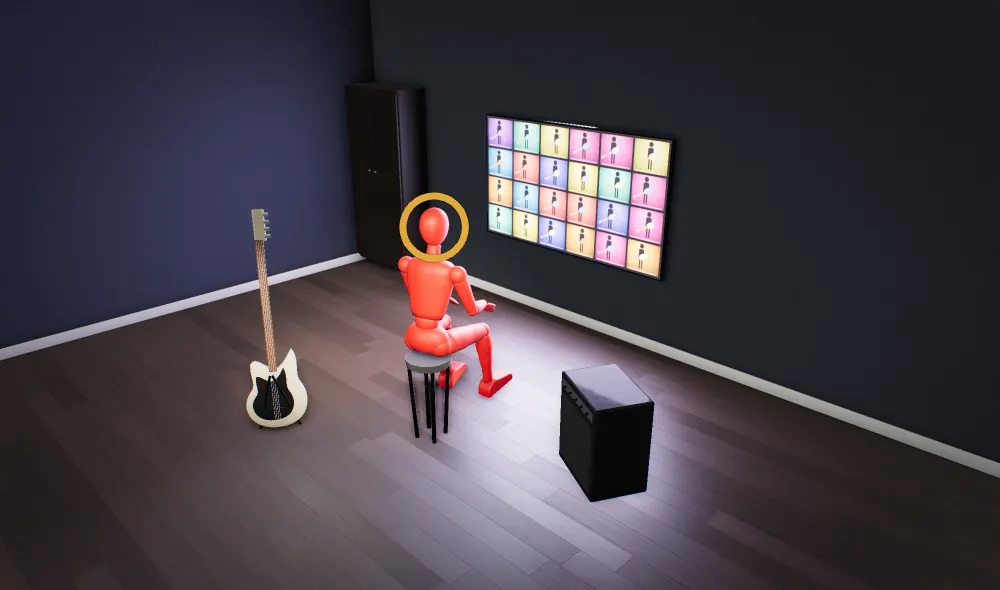
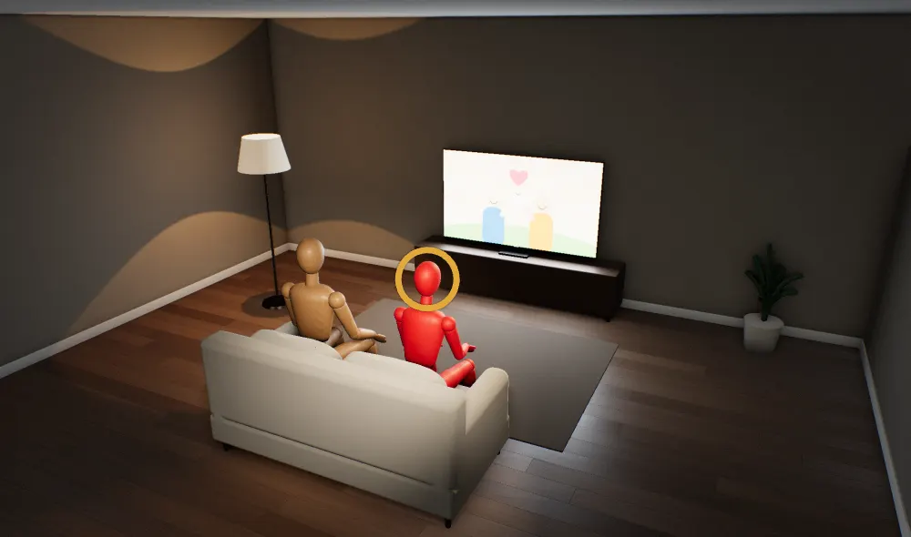
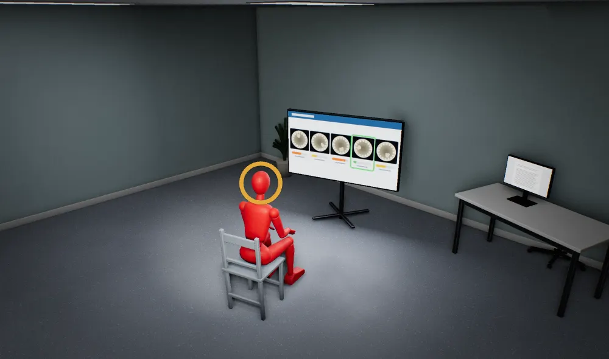

Bassist Marcelo Perez Schneider faked his playing for decades, but nobody can be the best when they're up against every bassist on the planet.
From the article


Ultimate Guitar, 28 Oct 2026
whatreally.is/a-bassist-miming-to-a-backing-track
AI does work twice as fast, but the modern world never runs out of work.
From the press release


prnewswire.com, 29 Oct 2026
whatreally.is/a-90-minute-longer-workday-with-ai
Governments are nudging people to have babies, but nobody wants kids they'd have to raise alone.
From the report


ifstudies.org, October 2026
whatreally.is/nudging-people-to-have-babies
Herasight scores embryos for depression risk, but whichever embryo you pick grows up in the same lonely, sleepless world that sets it off.
From the post


herasight.substack.com, 2 Nov 2026
whatreally.is/a-gene-score-for-picking-embryos
Hugh Hefner kept three girlfriends and twice-weekly orgies into old age, but he was after status, and the orgies stopped once E! gave him millions of viewers.
From the article


Entertainment Weekly, 8 May 2026
whatreally.is/group-sex-nights-at-the-mansion
Mothers go back to work while still nursing their babies, but a baby still needs its mother all day, whatever the leave policy says.
From the post


Reddit, r/newborns, 5 Nov 2026
whatreally.is/the-first-day-back-from-maternity-leave
Nirva sells a $200 necklace that tracks who drains you, but your gut already measures exactly that: who takes more than they give.
From the article


Tom's Guide, 10 Jan 2026
whatreally.is/a-necklace-that-reads-your-emotions
Teens are betting on sports apps, but one lucky bet pays more than two days of work, and the apps are built so it doesn't.
From the article


Good Morning America, 27 Mar 2026
whatreally.is/a-high-schooler-betting-100-dollars
A pop star's stage split goes viral, but it makes men feel wanted and women feel outdone, and the music business cashes in on both.
The source
A photo of a performer on stage, shared with no caption, name or linkA photo of a performer on stage, shared with no caption, name or link
whatreally.is/a-photo-of-a-split-on-stage
One in four teens never exercises, but nobody moves for a WHO target; people move when there's somewhere real to go.
From the article


Euronews, 4 Nov 2026
whatreally.is/one-in-four-teens-never-active